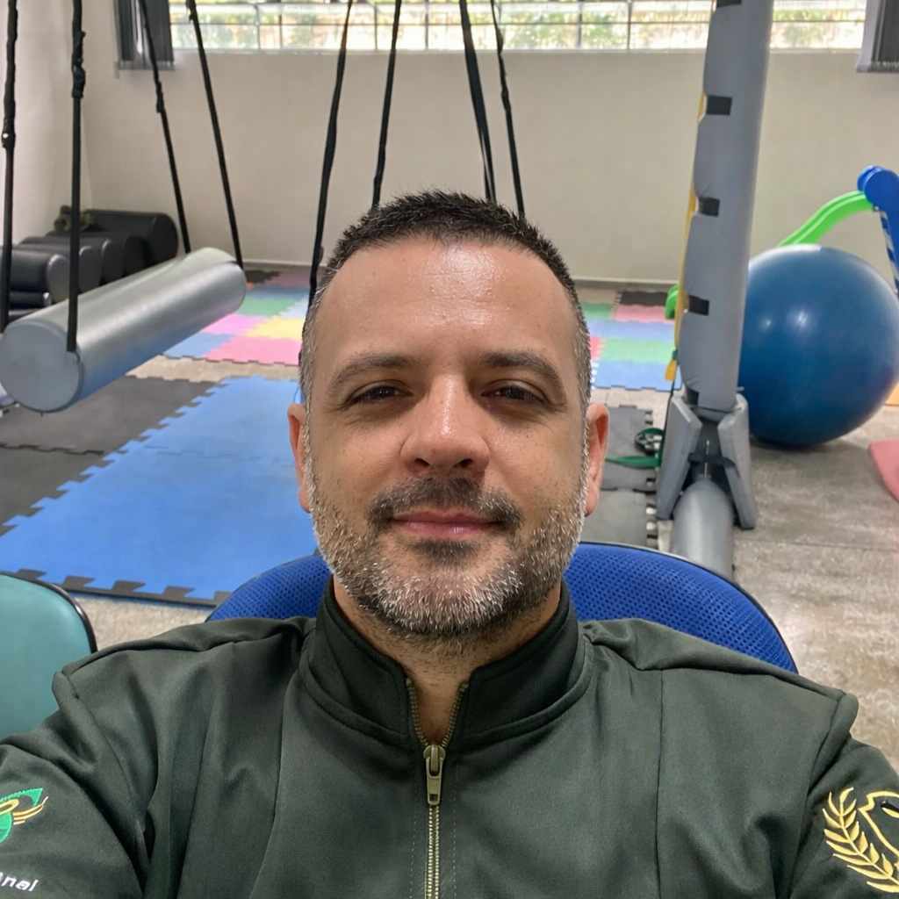

Professor MÁRCIO VALLE
Fundador — Proprietário
Especialista no Desenvolvimento Infantil Multidisciplinar
Trabalhamos para que mais famílias tenham acesso a um acompanhamento de qualidade, com excelência e responsabilidade, buscando sempre o melhor custo possível.
Somos movidos por um propósito: ser uma Luz Guia no desenvolvimento das nossas crianças, apoiando cada etapa de forma humana, respeitosa e consciente.

Fundador — Proprietário
Especialista no Desenvolvimento Infantil Multidisciplinar
Abordagens educacionais e multidisciplinares personalizadas
100% personalizado por especialista em educação especial
No conforto do lar da criança, em Águas de São Pedro e cidades vizinhas